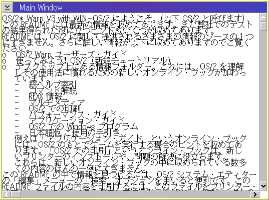

旼컴컴컴컴컴컴컴컴컴컴컴컴컴컴컴컴컴컴컴컴컴컴컴컴컴컴컴컴컴컴컴컴컴컴커 쿛M-supplied controls are DBCS-enabled. � 읕컴컴컴컴컴컴컴컴컴컴컴컴컴컴컴컴컴컴컴컴컴컴컴컴컴컴컴컴컴컴컴컴컴컴켸
ALL PM controls accept multibyte strings as their text. The related APIs to set/query the text accept multibyte strings, too. In case that the program uses wide string, the wide string must be converted before calling the PM APIs (refer toInterface between Wide-based Part and Multibyte-based Subsystems).
旼컴컴컴컴컴컴컴컴컴컴컴컴컴컴컴컴컴컴컴컴컴컴컴컴컴컴컴컴컴컴컴컴컴컴커 쿏o not assume font size when writing characters with GPIs. � 읕컴컴컴컴컴컴컴컴컴컴컴컴컴컴컴컴컴컴컴컴컴컴컴컴컴컴컴컴컴컴컴컴컴컴켸
When an application writes characters on a presentation space directly, assuming the heights/width of the font may cause overlapping of characters. The following figure shows a very common example of this mistake.
To avoid this, query the size of the current font size by GPIs.
Querying font size (XPRMMAIN.C)
...
/* device information */
long lDevCaps[4];
...
/**********************************************************************/
/* queryDevCapabilities() */
/* Queries desk top resolution and the main window's font's size in */
/* pels. The information is stored in lDevCaps[]. */
/**********************************************************************/
void queryDevCapabilities( HWND hwndFrame )
{
HPS hps;
FONTMETRICS fm;
...
/* Query main window's font size */
hps = WinGetPS(hwndFrame);
GpiQueryFontMetrics(hps, (LONG)sizeof(fm), &fm);
WinReleasePS(hps);
lDevCaps[CHAR_X] = fm.lAveCharWidth;
lDevCaps[CHAR_Y] = fm.lMaxBaselineExt+fm.lExternalLeading;
}
The lAveCharWidth of FONTMETRICS is the average width of SBCS characters in the font. In general, the width of DBCS characters are fixed even if it is a proportional font. Thus, if the width of a DBCS character is required, use GpiQueryTextBox() with DBCS white space.
Note: The code point of the DBCS white space are different among code pages. Externalize the data to the string table in a resource file.